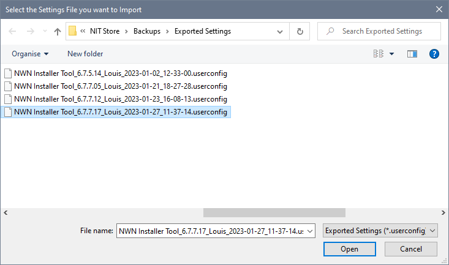
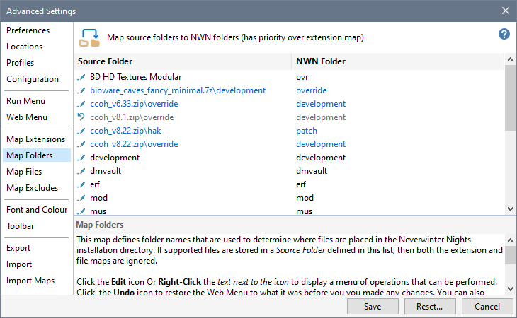

Import Map Settings is designed for people who want to synchronise Extensions, Folders, Files and Excludes Maps with another networked PC. Click Import Maps to specify the exported Settings file you want to use...

You should check the various Maps to ensure that the changes are what you expected...

If you are satisfied with the results, click the Save button to apply the imported Settings or click the Cancel button to retain your current Settings.
Specify program and file Locations
Specify Configuration Settings
Customise the Quick Access Toolbar
Import Map Settings